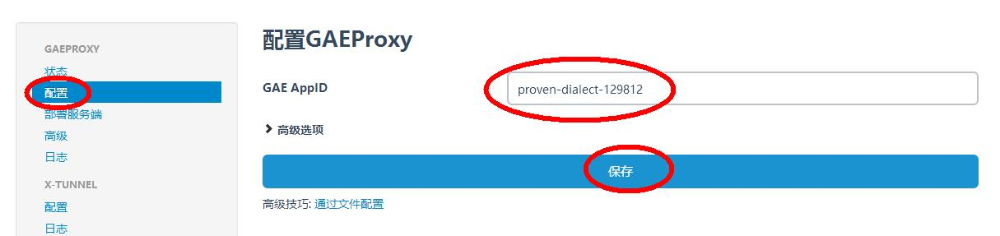

傻瓜科学上网教程（XX-NET）
用XX-NET科学上网
概述
用XX-NET科学上网总体来说分5步。
- 获取XX-NET。
- 设置和初始化。
- 创建和使用自己的appid*
- 设置代理
- 配置可靠的浏览器。
获取XX-NET
若无法下载，可下载备份。
下载稳定版或者懒人集成浏览器版。
下载懒人集成浏览器版的就不用往下看了
- 下载后解压，运行start.vbs
第一次运行时，将需要管理员权限安装证书（win7/8/10）
启动后，将由默认浏览器弹出配置界面http://localhost:8085/
状态栏将出现托盘图标

设置和初始化
打开Chrome浏览器（如果没有，下载装一个）
在地址栏输入chrome://extensions/，回车

接着将解压后的XX-NET文件夹XX-NET\SwitchyOmega下的SwitchyOmega.crx拖到Chrome浏览器扩展程序界面中
新下载安装的Chrome可能完全没有扩展程序，正常现象
确认添加扩展程序
跳过教程
在跳出的页面中点击导入导出[1]然后点击从备份文件恢复[2]。
选择XX-NET\SwitchyOmega下的OmegaOptions.bak
跳过教程
点击SwitchyOmega，切换成“XX-Net自动切换”.
键点击任务栏的XX-NET图标，选择取消全局代理
现在就，海阔凭鱼跃，天高任鸟飞啦
若无法科学上网，请等待XX-NET搜索IP。
创建和使用自己的appid*
若对网络要求不高，可跳过此步。
- 首先到谷歌注册一个帐号,将需要手机号。
- 绑定手机，若注册时已经绑定则可以跳过。
- 启用弱安全应用
创建项目,在右上角(点开图中Goagent右边小三角)创建应用，随便命名，如我的就是
My Project。图中圈出的就是你的appid,如我的就是
proven-dialect-129812将你的appid复制到配置界面-部署服务端界面的GAE Appid框中，开始部署
在弹出的窗口中给予权限。
部署成功。配置GAEProxy,将自己的appid复制到配置页面的GAE Appid栏。

配置成功
科学上网配置完成。
每个appid每天限制1G流量，每个帐号限制12个appid
若要配置多个appid，则在配置界面-部署服务端界面和配置页面框中填appid时用|号隔开。
如有意见建议或是问题反馈，可在下方评论。
DFTBA